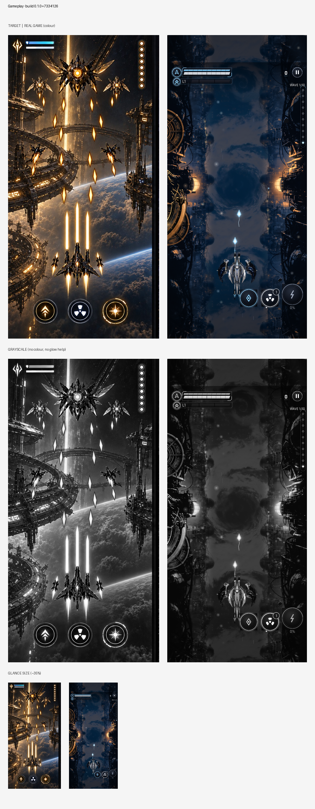
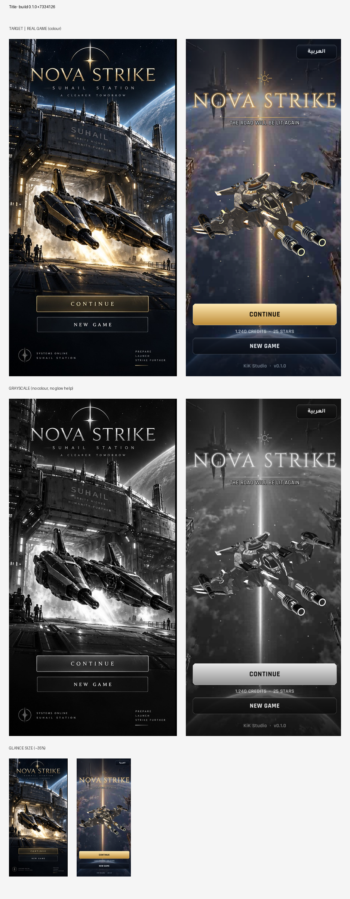
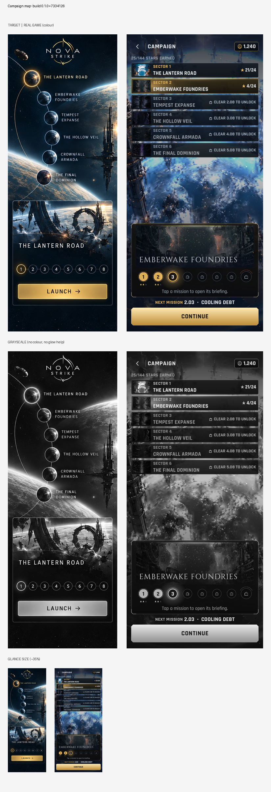
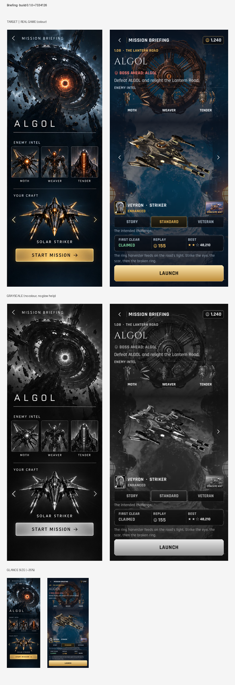
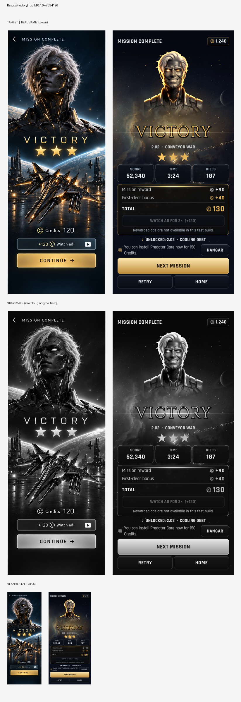
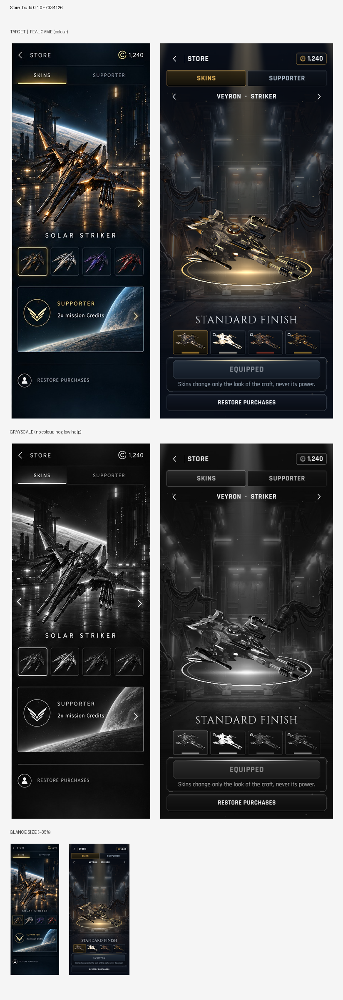
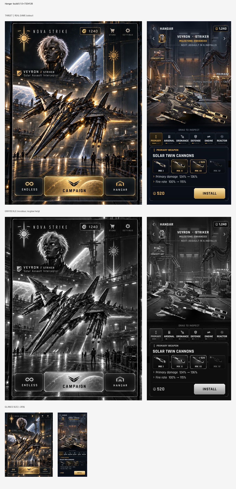
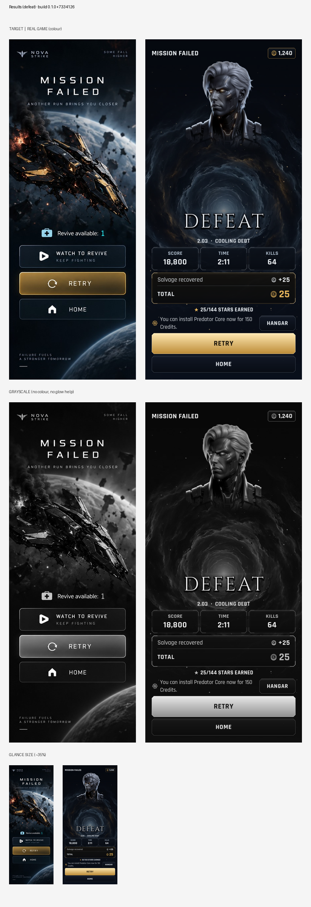
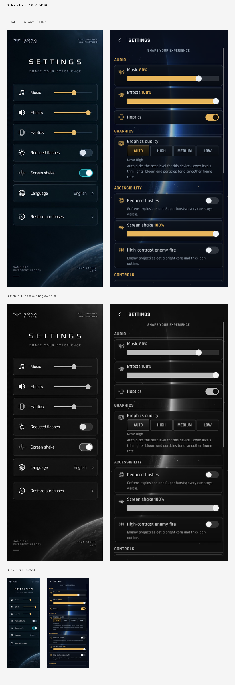

build.json · automated checks for build 0.1.0+7334126
Automated: measured from 3 bot run(s) (event logs). Targets: config/build_checks.json feel.targets (+ studio defaults). It shows pacing and systems working; it does not show that a person finds it fun.
| Target | Threshold | Passing runs | Median |
|---|---|---|---|
| Empty screen time (share of play) | ≤ 0.1 | 3/3 ✅ | 0.01 |
| Longest empty gap (s) | ≤ 3.0 | 3/3 ✅ | 1.0 |
| Empty gaps over 2 s | ≤ 1 | 3/3 ✅ | 0 |
| Time to first power-up P2 (s) | ≤ 30.0 | 2/3 ⚠️ | 16.3 |
| Time at top power level (share) | ≥ 0.2 | 0/3 ⚠️ | 0.0 |
| Pickups collected (share) | ≥ 0.7 | 3/3 ✅ | 0.93 |
| Bot deaths | ≤ 0 | 3/3 ✅ | 0 |
| Mean enemies on screen | ≥ 2.0 | 3/3 ✅ | 2.46 |
| Run | Unit | Result | Play s | Empty % | Longest gap | Gaps>2s | → P2 s | Time at P1/P2/P3/P4 % | Pickups | Mean enemies | Supers | Fails |
|---|---|---|---|---|---|---|---|---|---|---|---|---|
| 1.01 | arcanist | victory | 81.6 | 1 | 1.0 | 0 | 16.3 | 20/47/34/0 | 100% | 2.75 | 3 | Time at top power level (share) |
| 1.05 | striker | victory | 84.6 | 1 | 1.0 | 0 | 50.5 | 60/0/40/0 | 82% | 2.44 | 2 | Time to first power-up P2 (s), Time at top power level (share) |
| 2.01 | striker | victory | 87.4 | 1 | 1.0 | 0 | 14.9 | 17/58/25/0 | 93% | 2.46 | 3 | Time at top power level (share) |
Automated: each capture from this build beside its visual-bible target (sheets below), with measured differences. The numbers flag drift; they don't judge quality. Look at the sheets.
| # | Screen | Lightness (build / target) | Contrast | Colourfulness | Dark share | Highlights | Drift flags | Sheet |
|---|---|---|---|---|---|---|---|---|
| 1 | Gameplay | 15.1 / 26.5 | 13.2 / 21.2 | 10.8 / 12.0 | 0.74 / 0.48 | 0.01 / 0.03 | flatter | art_01.png |
| 2 | Title | 29.8 / 21.1 | 20.5 / 24.5 | 10.6 / 7.1 | 0.4 / 0.67 | 0.04 / 0.05 | – | art_02.png |
| 3 | Campaign map | 25.5 / 22.3 | 22.7 / 26.0 | 12.3 / 10.2 | 0.57 / 0.67 | 0.03 / 0.05 | – | art_03.png |
| 4 | Briefing | 21.1 / 16.6 | 19.1 / 20.8 | 12.1 / 8.6 | 0.66 / 0.76 | 0.03 / 0.03 | – | art_04.png |
| 5 | Results (victory) | 17.8 / 22.0 | 22.2 / 24.4 | 8.5 / 9.3 | 0.72 / 0.66 | 0.03 / 0.05 | – | art_05.png |
| 6 | Store | 15.6 / 15.0 | 14.9 / 20.2 | 5.7 / 6.8 | 0.74 / 0.79 | 0.01 / 0.03 | – | art_06.png |
| 7 | Hangar | 18.6 / 25.6 | 18.8 / 22.2 | 7.3 / 8.5 | 0.64 / 0.52 | 0.02 / 0.03 | – | art_07.png |
| 8 | Results (defeat) | 13.1 / 14.8 | 20.1 / 18.9 | 7.0 / 7.2 | 0.85 / 0.75 | 0.03 / 0.02 | – | art_08.png |
| 9 | Settings | 11.6 / 8.9 | 18.1 / 12.5 | 10.8 / 7.9 | 0.87 / 0.93 | 0.0 / 0.01 | – | art_09.png |
| Screen | Build | Target |
|---|---|---|
| Gameplay | #050911 #1c293a #313948 #07192c #121b28 #5e585a | #131215 #504135 #765e4a #262220 #37291f #b9a080 |
| Title | #151a25 #494a54 #323139 #6e6a6e #232935 #c1aa83 | #2e2d2d #05070c #0b1017 #18181b #605c56 #bbb3a4 |
| Campaign map | #0d1118 #323c4a #141d2a #5a6b7f #1e2228 #acac97 | #030d16 #202e39 #0b161e #616d71 #03121e #c7bea7 |
| Briefing | #0e141d #20303d #0b2030 #3e464e #202128 #a49373 | #040b12 #1b2128 #081119 #3d3f44 #111317 #9c927c |
| Results (victory) | #0b0f17 #242326 #070b14 #4f483f #101114 #b59d70 | #2a2e31 #050e16 #0c141b #171718 #5e5e5d #c3b496 |
| Store | #0a0e16 #242629 #3a3836 #19191c #10131a #6f685c | #171d22 #050f17 #0b1117 #030b12 #373839 #908e89 |
| Hangar | #0a0f18 #312f31 #16181d #4f4641 #070a11 #95856e | #0e0f10 #473f38 #2b2723 #706254 #1b1e20 #b8a48a |
| Results (defeat) | #06090f #12161e #090d16 #0c0f14 #252b33 #998d74 | #04090e #0a0e13 #0c171f #3a3d3f #1c2128 #81827e |
| Settings | #090f1a #070c17 #171e2c #0d131d #09111e #7d735d | #08161e #0a1822 #030b13 #06111a #031018 #313f49 |
Target: every role pair ≥ 25.0.
| Roles | Closest pair ΔE | Result |
|---|---|---|
| enemy vs background | 26 | ✅ |
| enemy_bullets vs background | 65 | ✅ |
| enemy_bullets vs player_bullets | 34 | ✅ |
| enemy_bullets vs enemy | 47 | ✅ |
| player_bullets vs background | 28 | ✅ |









{kind=link}
{kind=link}
{kind=link}
{kind=link}
{kind=link}
{kind=link}
{kind=link}
{kind=link}
{kind=link}